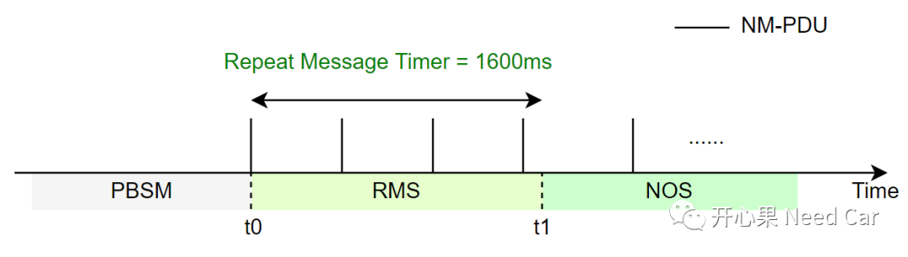
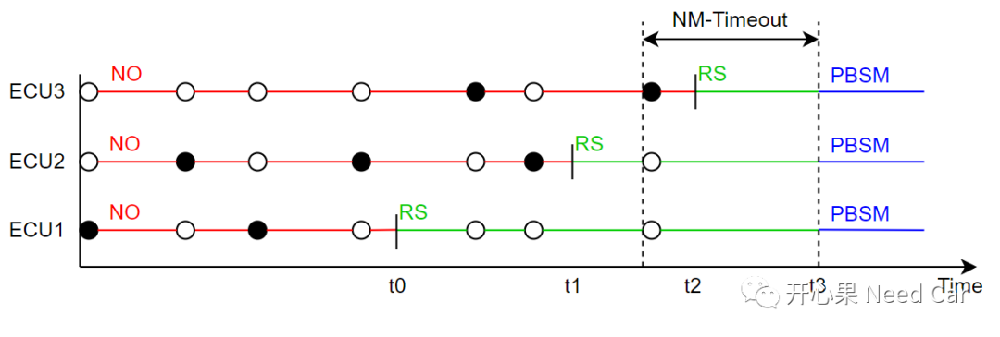
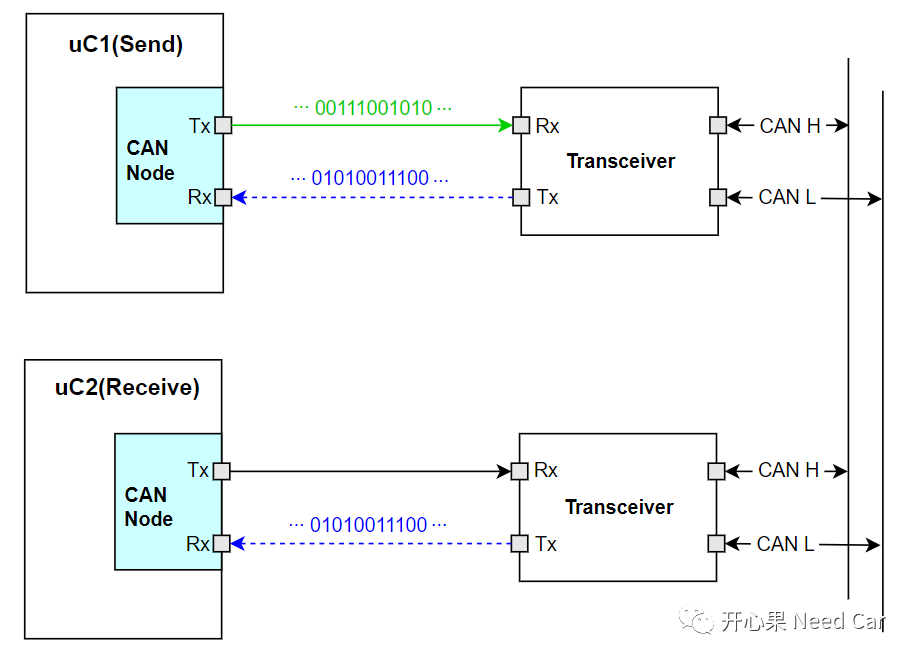

开心果 Need Car · 2022-08-07T08:10:00+08:00 · 微信原文
最近和一些读者讨论了一些Autosar网络管理相关问题，有几个问题做了一下梳理，再此和大家分享一下。
Q1：CanNmImmediateRestartEnabled使能，NM PDU的外发行为？

Q2：NM-Timeout何时重置？

提示：NO（Normal Operation）、RS（Ready Sleep）、PBSM（Prepare-Bus-Sleep mode）。黑色实心表示发送NM-PDU，黑色空心表示接收NM-PDU。
上图可以看出：每个节点释放网络的时机不确定，每个节点的网络释放时机，取决于节点的上层实现。注意，不是进入RS状态重置NM-Timeout。节点释放网络的时候，NM-Timeout继续递减，不会重置。当网段内没有节点发送网络管理报文，且NM-Timeout走完，所有节点一起进入PBSM模式。
Q3：如何理解CAN通信的串行通信？
A3：串行通信，就是用一个Pin发送/接收Bit位流信息。如下图：对于发送节点(uC1)，通过Controller的Tx Pin发送Bit位流信息，即：uC1发送报文。同时，uC1通过Controller的Rx Pin，回读自身发送的信息是否正确。对于同网段内的其他节点(uC2)，通过Rx Pin接收uC1的发送信息，即：接收报文。

往期精彩回顾